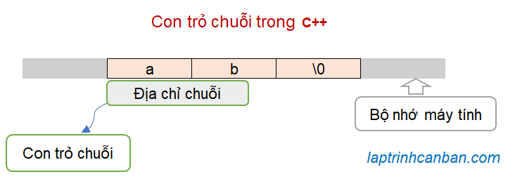

Cùng tìm hiểu về con trỏ chuỗi trong C++. Bạn sẽ biết cách sử dụng con trỏ để xử lý chuỗi trong C++ sau bài học này.
Con trỏ chuỗi trong C++ là gì
Trong bài Con trỏ trong C++ là gì chúng ta đã biết, con trỏ trong C++ là một biến được dùng để lưu trữ địa chỉ của dữ liệu trong bộ nhớ máy tính.
Trong bài Con trỏ mảng trong C++ chúng ta cũng đã biết cách sử dụng con trỏ để thao tác với mảng rồi.
Chuỗi ký tự trong C++ thực ra cũng là một loại mảng, và do đó, chúng ta cũng có thể sử dụng con trỏ để lưu trữ địa chỉ của chuỗi và qua đó thao tác với chúng. Chúng ta gọi con trỏ sử dụng trong chuỗi là con trỏ chuỗi trong C++.

Bằng cách sử dụng con trỏ chuỗi trong C++, chúng ta có thể khai báo và xử lý chuỗi trực tiếp, cũng như xử lý gián tiếp chuỗi trong hàm, qua đó nâng cao việc sử dụng hiệu quả bộ nhớ và giảm thời gian thực thi chương trình.
Do đó, con trỏ chuỗi trong C++ là phần kiến thức không thể thiếu mà một lập trình viên về C++ cần phải nắm vững.
Khai báo con trỏ chuỗi trong C++
Cách khai báo con trỏ chuỗi trong C++ cũng tương tự như cách khai báo các loại con trỏ khác. Chúng ta viết kiểu của con trỏ, tiếp theo là dấu hoa thị * và tên của con trỏ với cú pháp sau đây:
char *p;
Trong đó char là kiểu dữ liệu của con trỏ chuỗi, và p là tên con trỏ.
Sau khi khai báo con trỏ chuỗi, chúng ta có thể gán địa chỉ của một chuỗi cho nó. Tương tự như với con trỏ mảng thì khi gán địa chỉ chuỗi cho con trỏ trong C++, chúng ta không dùng toán tử & khi gán địa chỉ của chuỗi cho con trỏ.
Ví dụ:
char a[] = "Hello", *p1; |
Con trỏ và địa chỉ trong chuỗi
Con trỏ chuỗi biểu thị địa chỉ của điểm bắt đầu chuỗi
Con trỏ chuỗi biểu thị địa chỉ của điểm bắt đầu vùng lưu trữ chuỗi trong bộ nhớ. Địa chỉ này cũng chính là địa chỉ của ký tự đầu tiên (có index bằng 0) của chuỗi trong bộ nhớ.
Lưu ý khác với ngôn ngữ C sẽ lưu địa chỉ của điểm bắt đầu chuỗi dưới dạng một dãy số thì trong C++, địa chỉ của điểm bắt đầu chuỗi được biểu diễn bởi các ký tự từ vị trí con trỏ chỉ đến tới cuối chuỗi.
Ví dụ, chúng a có thể xuất ra các ký tự từ vị trí con trỏ chỉ đến tới cuối chuỗi như sau:
|
Kết quả:
Hello |
Có thể thấy rõ địa chỉ của con trỏ chuỗi đã được biểu diễn bởi các ký tự từ vị trí con trỏ chỉ đến tới cuối chuỗi như trên.
Lưu ý phép cộng một số đơn vị vào con trỏ như trên được gọi là phép dịch chuyển con trỏ, và chúng ta sẽ làm rõ xử lý này dưới đây.
Chỉ định địa chỉ trong chuỗi thông qua dịch chuyển con trỏ
Chúng ta dịch chuyển con trỏ bằng cách cộng trừ nó cho một số đơn vị. Và bằng cách dịch chuyển con trỏ, chúng ta có thể chỉ định tới một địa chỉ trong chuỗi mà chúng ta cần làm việc với ký tự tại địa chỉ đó.
Ví dụ, do con trỏ p biểu thị địa chỉ trỏ tới ký tự đầu tiên (index bằng 0), nên chúng ta có thể chỉ định địa chỉ của ký tự thứ 2 (có index bằng 1) trong chuỗi bằng cách cộng thêm 1 đơn vị vào con trỏ, hoặc ký tự thứ 4 (có index bằng 3) trong chuỗi bằng cách cộng thêm 3 đơn vị vào con trỏ như sau:
|
Kết quả, bằng cách dịch chuyển con trỏ 1 đơn vị hoặc một số đơn vị, chúng ta có thể chỉ định các địa chỉ của các ký tự trong chuỗi như sau:
array[0] address: Hello |
Bằng cách dịch chuyển con trỏ, chúng ta có thể chỉ định vị trí cần truy cập trong chuỗi, và qua đó có thể tiến hành truy xuất ký tự tại vị trí đó bằng cách dưới đây.
Truy xuất các ký tự trong chuỗi bằng con trỏ
Trong bài Con trỏ trong C++ là gì chúng ta đã biết để truy xuất giá trị tại vị trí con trỏ chỉ đến, chúng ta viết dấu hoa thị * vào đằng trước tên con trỏ.
Cách truy xuất các ký tự trong chuỗi bằng con trỏ cũng tương tự như vậy.
Giả sử chúng ta có chuỗi array và cho con trỏ chuỗi p lưu địa chỉ của nó như sau:
char a[100], *p; |
Thông thường để truy cập vào từng ký tự trong chuỗi, chúng ta chỉ định index của ký tự đó trong chuỗi, ví dụ như a[0] hoặc a[1] chẳng hạn.
Tuy nhiên bằng cách kết hợp tên con trỏ với dấu hoa thị *, chúng ta cũng có thể truy cập và lấy giá trị của các ký tự trong chuỗi array với cú pháp sau đây:
*(p + index);
Trong đó index là index của ký tự cần lấy giá trị trong chuỗi và p là con trỏ chuỗi.
Ỏ đây, (p + index) có ý nghĩa tăng con trỏ một số index đơn vị, nhằm chỉ định địa chỉ của ký tự cần truy cập trên bộ nhớ. Và việc thêm hoa thị *(p + index) nhằm lấy giá trị ký tự tại vị trí này.
Và trong trường hợp index bằng 0, chúng ta có thể hiểu rằng cách viết *p biểu thị giá trị của ký tự đầu tiên trong chuỗi.
Cách truy cập vào ký tự trong chuỗi bằng index và bằng con trỏ có thể so sánh như bảng dưới đây:
| index | Truy xuất bằng chuỗi | Truy xuất bằng con trỏ |
|---|---|---|
| 0 | a[0] | *p |
| 1 | a[1] | *(p + 1) |
| 2 | a[2] | *(p + 2) |
| 3 | a[3] | *(p + 3) |
| … | … | … |
| n | a[n] | *(p + n) |
Ví dụ cụ thể:
|
Kết quả, chuỗi và con trỏ đều đưa ra kết quả truy xuất giá trị ký tự giống nhau như sau:
l |
Nhập xuất chuỗi bằng con trỏ trong C++
Bằng cách sử dụng con trỏ chuỗi, chúng ta có thể chỉ định vị trí các ký tự trong chuỗi, cũng như là truy cập và lấy giá trị của các ký tự đó.
Ứng dụng điều này, chúng ta cũng có thể nhập xuất chuỗi bằng con trỏ trong C++ như sau.
Nhập chuỗi bằng con trỏ trong C++
Trong bài Nhập chuỗi trong C++ chúng ta đã biết cách nhập trực tiếp giá trị từ bàn phím vào chuỗi như sau:
char str[100]; |
Để nhập chuỗi bằng con trỏ trong C++ chúng ta chỉ cần sử dụng con trỏ thay cho chuỗi như sau là xong:
char str[100], *p; |
Xuất chuỗi bằng con trỏ trong C++
Để xuất trực tiếp một chuỗi, chúng ta viết như sau:
char str[100]; |
Để xuất chuỗi bằng con trỏ trong C++ thì sẽ phức tạp hơn chút. Chúng ta sẽ cần dịch chuyển vị trí con trỏ lần lượt từ đầu chuỗi đến cuối chuỗi và in lần lươt các ký tự tại vị trí đó.
Để làm được điều đó, chúng ta cần một vòng lặp và lặp từ đầu đến cuối chuỗi, cho tới khi gặp ký tự kết thúc chuỗi \0 thì thôi.
Chúng ta viết:
char str[100], *p; |
Chương trình mẫu nhập xuất chuỗi bằng con trỏ trong C++
Dưới đây là chương trình mẫu nhập xuất chuỗi bằng con trỏ trong C++:
|
Kết quả:
>>Nhap chuoi: abcd |
Khai báo chuỗi bằng con trỏ trong C++
Trong ngôn ngữ C, chúng ta có thể khai báo chuỗi bằng con trỏ như sau:
char *array_str ="Hello"; |
Tuy nhiên, rất tiếc là chúng ta không thể sử dụng con trỏ để khai báo chuỗi trong C++ với cách viết như vậy, vì lỗi sẽ bị trả về như sau:
char *array_str ="Hello"; |
Do vậy, nếu các bạn đã học C trước khi chuyển qua học C++ thì hãy quên đi chuyện khai báo chuỗi bằng con trỏ trong C++ đi nhé.
Tổng kết
Trên đây Kiyoshi đã hướng dẫn các bạn về con trỏ chuỗi trong C++ rồi. Để nắm rõ nội dung bài học hơn, bạn hãy thực hành viết lại các ví dụ của ngày hôm nay nhé.
Và hãy cùng tìm hiểu những kiến thức sâu hơn về C++ trong các bài học tiếp theo.
URL Link
https://laptrinhcanban.com/cpp/lap-trinh-cpp-co-ban/chuoi-string-trong-cpp/con-tro-chuoi-trong-cpp/
HOME › lập trình c++ cơ bản dành cho người mới học lập trình>>13. chuỗi trong c++